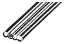
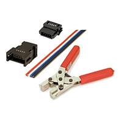
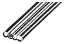
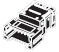
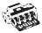
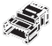
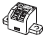
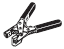

| Name | Appearance | Specification | Model | Standards |
|---|---|---|---|---|
| Flat Cable I |

|
4-conductor flat cable (UL2555)
Length: 100 m Conductor diameters: 0.75 mm2 × 2, 0.5 mm2 × 2 |
DCA4-4F10 | --- |
Building Automation
Industrial Automation
Power Automation & Safety


Bangladesh Distributor
CompoNet Peripheral Devices

about this Product Family
Related Contents
last update: October 03, 2016
| Name | Appearance | Specification | Model | Standards |
|---|---|---|---|---|
| Flat Cable I |

|
4-conductor flat cable (UL2555)
Length: 100 m Conductor diameters: 0.75 mm2 × 2, 0.5 mm2 × 2 |
DCA4-4F10 | --- |
Note: Also can be used with general-purpose round cable I (VCTF 2-conductor cable).
| Name | Appearance | Specification | Model | Stand-
ards |
|---|---|---|---|---|
| Flat
Connector Socket |
 | Use this Connector in a set with a DCN4-BR4 Flat Connector
Plug for the following applications. Extending the trunk line or a sub-trunk line T-branching from the trunk line or a sub-trunk line T-branching a sub-branch line from a branch line |
DCN4-TR4 * | --- |
| Use this Connector independently for the following
applications. Used when connecting a DCN4-TM4 Terminating Resistor to the end of the trunk line or a sub-trunk line. |
||||
| Flat
Connector Plug |
 |
Use this Connector in a set with a DCN4-TR4 Flat Connector
Socket for the following applications. Extending the trunk line or a sub-trunk line T-branching from the trunk line or a sub-trunk line T-branching a sub-branch line from a branch line |
DCN4-BR4 * | |
| Use this Connector independently for the following
applications. Connecting Communications Cable to a Unit Connecting Communications Cable to a DCN4-MD4 Multidrop Connector (when a multidrop connection is used) |
||||
| Multidrop
Connector |
Use Multidrop Connectors for multi-drop wiring of Slave Units
or Repeater Units to trunk lines, sub-trunk lines, or branch lines. |
DCN4-MD4 * | ||
| Multidrop
Connector Plug |
Connecting Communications Cable to a Unit in a multidrop
connection This connector can be used with the following Units:Bit Slave Units with Compact Connectors (CRT1B-[]D0[]JS(-1)) |
DCN4-MR4 | ||
| Terminating
Resistance |
This is a Connector-type Terminating Resistor for Flat Cable
I or Round Cable II. It is connected to a DCN4-TR4 Flat Connector Socket at the end of a trunk line or sub-trunk line. |
DCN4-TM4 * | ||
| Special Tools |  |
This is the crimping tool for the following connectors:
DCN4-TR4(-1) Flat Connector Socket DCN4-BR4 Flat Connector Plug DCN4-BR4D Conversion Connector for Standard Thin Cable and Flat Cable DCN4-SF4D Connector for Flat Cable |
DWT-A01 |
| Name | Appearance | Application | Model | Stand-
ards |
|---|---|---|---|---|
| Open Type
Connector (for connecting Units) |

|
Converts the Unit's communications connector into a
screw terminal block to enable connecting round cable to a Slave Unit or Repeater Unit. |
DCN4-TB4 * | --- |
| Terminating
Resistor |
This is a Terminal Block-type Terminating Resistor for
Round cable I or Round cable II. It is connected to the end of a trunk line or sub-trunk line round cable. |
DRS1-T | U |
| Name | Appearance | Application | Model | Stand-
ards |
|---|---|---|---|---|
| Open Type
Connector (for connecting Units) |
Converts the Unit's communications connector into a
screw terminal block to enable connecting round cable to a Slave Unit or Repeater Unit. |
DCN4-TB4 * | --- | |
| Flat Connector
Socket |
 | Use this Connector in a set with a DCN4-BR4 Flat
Connector Plug for the following applications. Extending the trunk line or a sub-trunk line T-branching from the trunk line or a sub-trunk line T-branching a sub-branch line from a branch line |
DCN4-TR4 * | |
| Use this Connector independently for the following
applications. Used when connecting a DCN4-TM4 Terminating Resistor to the end of the trunk line or a sub-trunk line. |
||||
| Terminating
Resistance |
This is a Connector-type Terminating Resistor for Flat
Cable I or Round cable II. It is connected to a DCN4- TR4 Flat Connector Socket at the end of a trunk line or sub-trunk line. |
DCN4-TM4 * | ||
|  | This is a Terminal Block-type Terminating Resistor for
Round cable I or Round cable II. It is connected to the end of a trunk line or sub-trunk line round cable. |
DRS1-T | ||
| Special Tools |  | This is the crimping tool for the following connectors:
DCN4-TR4(-1) Flat Connector Socket DCN4-BR4 Flat Connector Plug DCN4-BR4D Conversion Connector for Standard Thin Cable and Flat Cable DCN4-SF4D Connector for Flat Cable |
DWT-A01 |
| Name | Appearance | Application | Model | Stand-
ards |
|---|---|---|---|---|
| Mounting
Bracket |
--- | Unit with e-CON Connectors: For CRT1-V[]D08S(-1)/VAD04S/
VDA02S |
CRT1-ATT02 | --- |
| Unit with MIL Connectors: For CRT1-V[]D016ML(-1)/VAD04ML/
VDA02ML |
CRT1-ATT01 | |||
| Unit with MIL Connectors: For CRT1-V[]D32ML(-1) | SRT2-ATT02 | |||
| Bit Slaves with Compact Connectors:
For CRT1B-[]D02JS(-1), CRT1B-[]D04JS(-1) |
CRT1-ATT03 |
last update: October 03, 2016